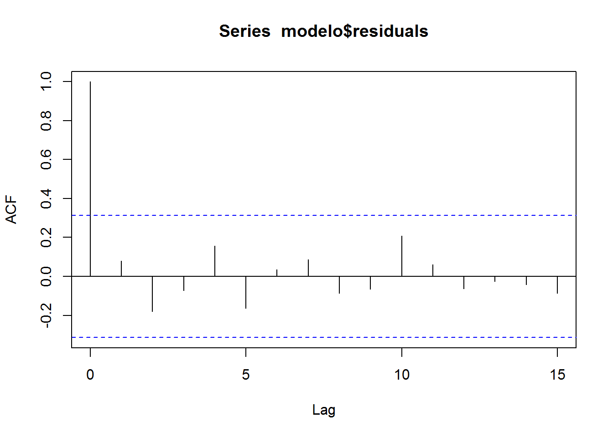
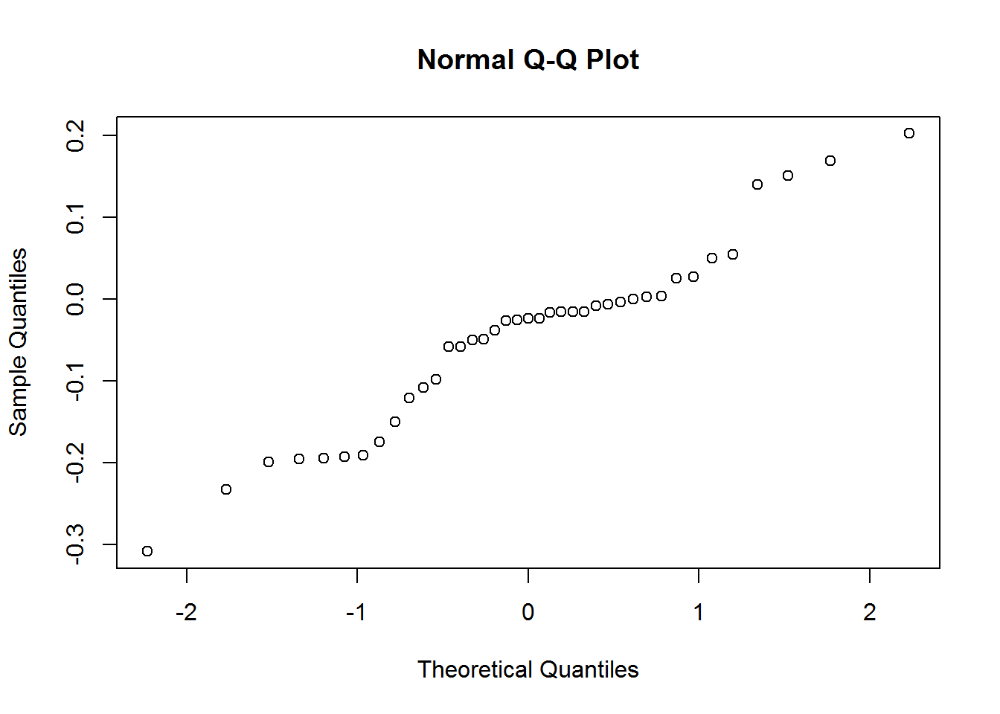

##
## z test of coefficients:
##
## Estimate Std. Error z value Pr(>|z|)
## ar1 -1.671872 0.070566 -23.6924 < 2.2e-16 ***
## ar2 -0.933436 0.056665 -16.4728 < 2.2e-16 ***
## ma1 0.630304 0.150644 4.1841 2.863e-05 ***
## ---
## Signif. codes: 0 '***' 0.001 '**' 0.01 '*' 0.05 '.' 0.1 ' ' 1
## m Qm pvalue
## 1 0.27 0.6046729
## 2 1.66 0.1969612
## 3 1.89 0.1688373
## 4 3.01 0.2224509
## 5 4.27 0.2337890
## 6 4.33 0.3628754
## 7 4.70 0.4534629
## 8 5.08 0.5335103
## 9 5.31 0.6215916
## 10 7.71 0.4621424
## 11 7.93 0.5412375
## 12 8.17 0.6124462
## 13 8.21 0.6947668
## 14 8.32 0.7599401
## 15 8.81 0.7869332
## 16 8.82 0.8422749
## 17 8.92 0.8818287
## 18 8.92 0.9166531
## 19 8.93 0.9425185
## 20 8.93 0.9613892
## 21 8.93 0.9745944
## 22 8.94 0.9835556
## 23 8.94 0.9896411
## 24 9.02 0.9932395
## 25 9.30 0.9948520
## 26 9.41 0.9965910
## 27 9.42 0.9979403
## 28 9.46 0.9987488
## 29 9.51 0.9992422
## 30 9.59 0.9995313